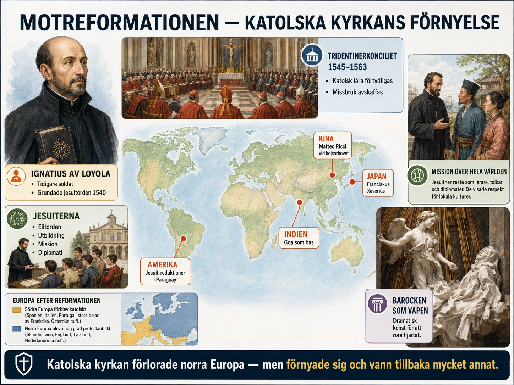
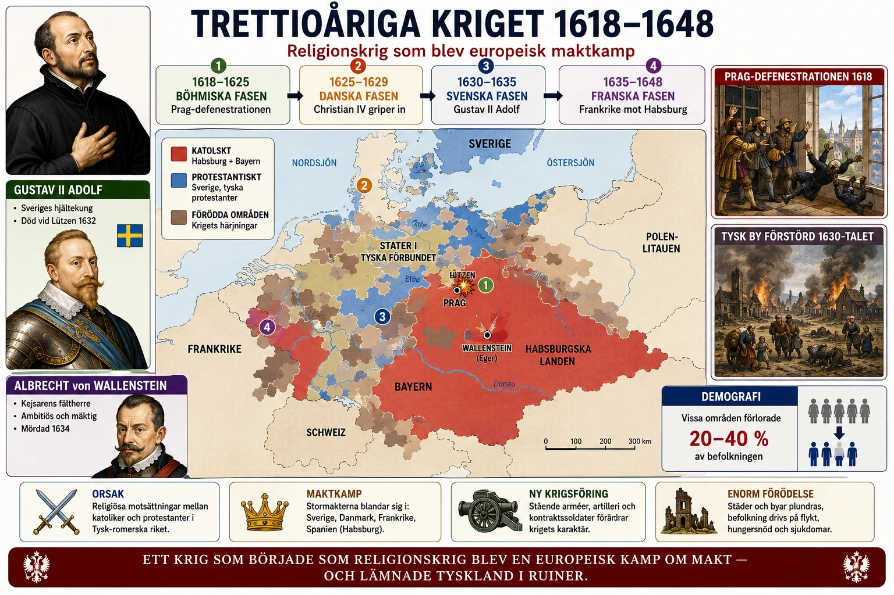
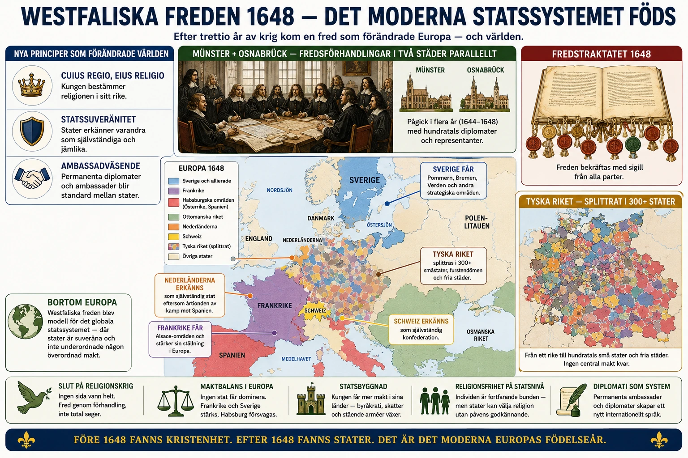
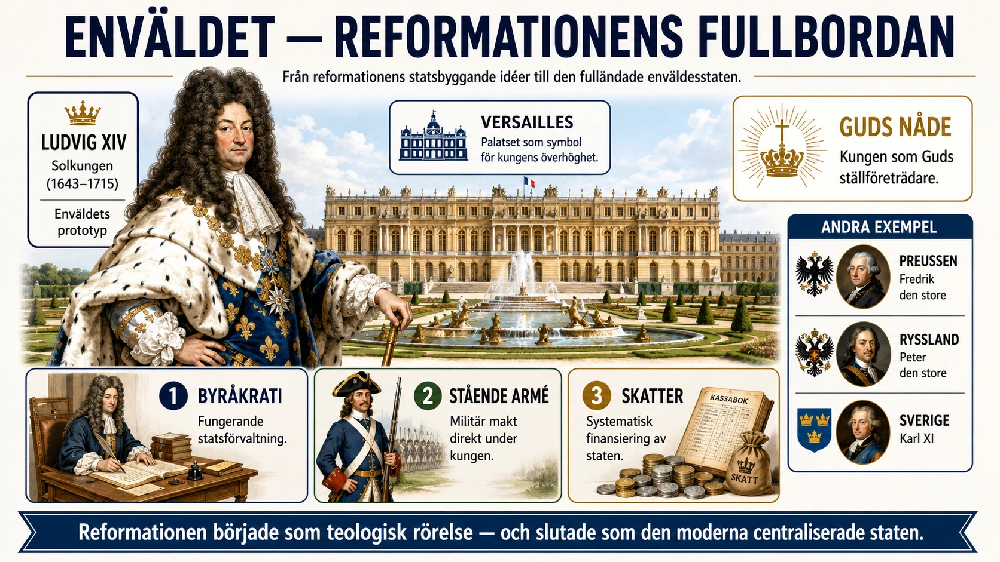
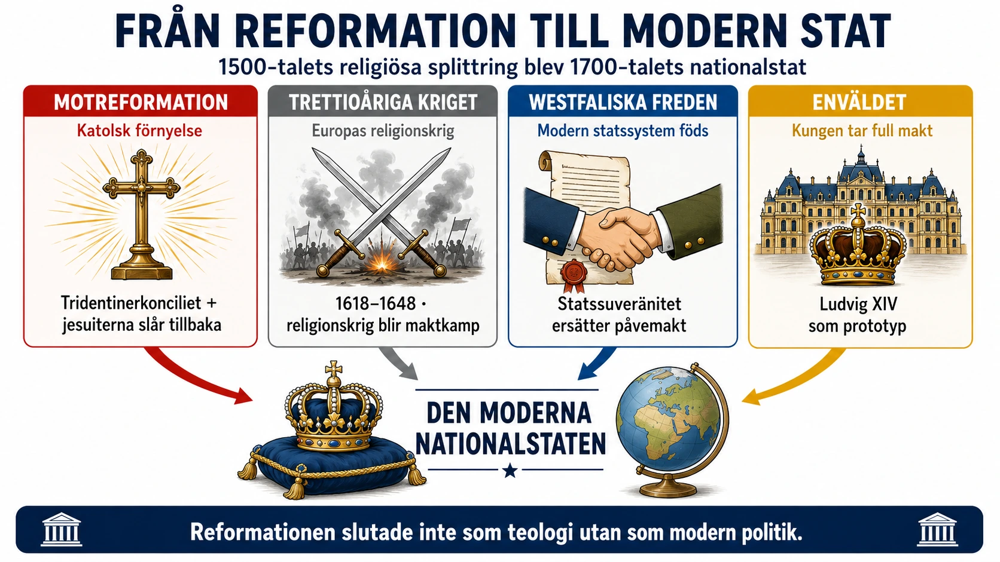

— från katolsk motreform till Versailles envälde —
Titta på bilden innan du läser vidare:

I §1 och §2 läste du om hur reformationen splittrade Europa. Stora delar av norra Europa bröt med påven i Rom. Tyskland splittrades, Sverige blev lutherskt, kalvinismen växte i Schweiz och Holland, anglikanismen i England.
Den katolska kyrkan kunde inte bara titta på. Den var tvungen att svara.
Motreformationen är den katolska kyrkans svar på protestantismen. Den handlade om två saker:
Den viktigaste delen av motreformationen var Trent-konciliet (även kallat Tridentinska kyrkomötet). Det hölls i staden Trient mellan 1545 och 1563.
På mötet erkände kyrkan att det fanns problem:
Därför beslutade mötet om flera reformer:
Men kyrkan ändrade inte sin tro. Mötet slog fast att:
Motreformationen hade också en hårdare sida: inkvisitionen. Det var kyrkliga domstolar som skulle hitta människor som spred protestantiska idéer.
Misstänkta kunde förhöras, tvingas ta tillbaka sina åsikter och ibland straffas hårt. I Spanien och Italien blev inkvisitionen ett viktigt vapen mot protestantismen.
Motreformationen gjorde att katolska kyrkan blev starkare och mer organiserad. Den lyckades vinna tillbaka människor till katolicismen i delar av Europa, särskilt i södra Tyskland, Polen och Österrike.
Men den förlorade norra Europa permanent. Sverige, Danmark, England och norra Tyskland förblev protestantiska.
När reformationen spreds i Europa under 1500-talet hamnade den katolska kyrkan i en allvarlig kris. Martin Luther och andra reformatorer hade kritiserat kyrkan hårt. De menade att kyrkan hade blivit för rik, att präster och biskopar ibland misskötte sina uppgifter och att avlatshandeln var fel.
Reformationen ledde till att stora delar av norra Europa bröt med påven i Rom. Tyskland splittrades mellan katoliker och protestanter. Sverige blev lutherskt. I Schweiz växte kalvinismen fram och i England skapades den anglikanska kyrkan. Den katolska kyrkan behövde därför svara på två frågor: Vad hade gått fel inom kyrkan? Och hur skulle man stoppa protestantismen från att sprida sig ännu mer?
Detta svar brukar kallas motreformationen eller den katolska reformationen. Den handlade både om att förbättra kyrkan inifrån och om att försvara den katolska tron mot protestanterna.
Den viktigaste delen av motreformationen var Tridentinska kyrkomötet, som hölls i staden Trient mellan 1545 och 1563. Mötet pågick inte hela tiden utan samlades i olika perioder under nästan tjugo år. Dit kom biskopar, teologer och andra ledare för att diskutera hur kyrkan skulle förändras.
På mötet erkände man att det fanns stora problem inom kyrkan. Alla präster var inte tillräckligt utbildade. Vissa biskopar bodde inte ens i sina egna stift — alltså i de områden de egentligen skulle ansvara för. Det gjorde att kyrkan ibland uppfattades som slarvig och mer intresserad av pengar än av människors tro.
Därför beslutade kyrkomötet om flera viktiga reformer. Avlatshandeln skulle stoppas. Det betydde inte att katoliker slutade tro på avlat som idé, men det skulle inte längre få missbrukas som försäljning. Präster skulle få bättre utbildning, så att de kunde sköta gudstjänsterna bättre. Biskopar måste bo i sina stift och faktiskt göra sitt arbete. Kyrkans disciplin skulle skärpas.
Men Trent-konciliet var inte bara reform. Det var också ett tydligt försvar av den katolska läran. Kyrkan sade ungefär: "Vi erkänner att vissa saker måste förbättras, men vi ändrar inte vår tro bara för att protestanterna kräver det."
Mötet slog fast att påven fortfarande var kyrkans högsta ledare. Man höll fast vid de sju sakramenten, till exempel dopet, nattvarden, bikten och äktenskapet. Protestanterna accepterade oftast färre sakrament, men den katolska kyrkan vägrade ändra sig.
Kyrkan försvarade också helgonkulten — att helgon kunde vördas som förebilder. Dessutom betonade man att traditionen var viktig vid sidan av Bibeln. Protestanterna talade om sola scriptura (endast Skriften), men katolikerna menade att både Bibeln och kyrkans tradition behövdes.
Motreformationen hade också en hårdare sida: inkvisitionen. Det var kyrkliga domstolar som skulle bekämpa det som kyrkan såg som falsk lära, alltså kätteri.
Inkvisitionen försökte hitta personer som misstänktes sprida protestantiska idéer. De misstänkta kunde förhöras och ibland straffas hårt. I Spanien och Italien blev inkvisitionen ett viktigt vapen mot protestantismen. Böcker som ansågs farliga kunde förbjudas.
Motreformationen hade två sidor. Å ena sidan försökte den katolska kyrkan verkligen förbättra sig. Präster utbildades bättre, biskopar fick tydligare ansvar och avlatshandeln stoppades. Å andra sidan blev kyrkan också mer kontrollerande och använde inkvisitionen mot motståndare.
Motreformationen gjorde att den katolska kyrkan blev starkare och mer organiserad. Den lyckades vinna tillbaka områden som Polen, Österrike och södra Tyskland till katolicismen. Men den lyckades inte vinna tillbaka norra Europa.
Splittringen mellan katoliker och protestanter blev tydligare än någonsin. Denna splittring skulle leda till nya, blodiga konflikter — som du läser om i §3B.
En enkel orsakskedja: Protestantismen växte och hotade katolska kyrkan → kyrkan reagerade med både reform och försvar → Trent-konciliet 1545-1563 stoppade avlatshandeln och försvarade katolska läran → inkvisitionen bekämpade kätteri → katolska kyrkan blev starkare men förlorade norra Europa permanent.
Vid 1540-talet var katolska kyrkan i panik. Reformationen hade pågått i 25 år. Hela landområden hade brutit med Rom. Lutheraner kontrollerade nästan halva Tyskland och hela Skandinavien. Kalvinister växte i Schweiz, Holland och Frankrike.
Men det fanns också ljusglimtar för katoliker. Spanien och Italien stod kvar. Frankrike förblev officiellt katolskt. Polen, Österrike och Bayern var katolska.
Frågan var: skulle katolicismen vinna tillbaka det förlorade? Motreformationen var katolska kyrkans medvetna svar.
Trent-konciliet samlades i tre omgångar mellan 1545 och 1563. Att det tog så lång tid berodde delvis på krig och politiska komplikationer. Tyska protestantiska furstar hade också inbjudits men kom aldrig. Mötet blev därför ett uttryckligen katolskt möte, inte ett försök att hitta gemensam grund.
Resultaten kan delas i tre kategorier:
Reformer av praxis:
Förtydligande av lära:
Disciplinära åtgärder:
Den mest dynamiska kraften i motreformationen var en ny orden — jesuiterna (Societas Iesu, "Jesu sällskap"). Deras grundare var Ignatius av Loyola (1491-1556), en spansk lågadel som först blev militär. Hans liv förändrades när han blev skadad i benet i ett slag 1521. Under en lång konvalescens läste han religiösa böcker och bestämde sig för att ägna sitt liv åt Gud.
År 1540 godkände påven hans nya orden. Den hade tre särdrag:
1. Militärisk lydnad. Jesuiterna lovade absolut lydnad till påven. De kunde skickas vart som helst i världen.
2. Utbildning som vapen. Jesuiterna trodde att de bästa katolikerna var de bäst utbildade. De grundade hundratals skolor och universitet i katolska Europa. Tanken var att vinna människor med argument, inte med svärd.
3. Global mission. Jesuiter skickades till hela världen. Francis Xavier reste till Indien och Japan. Matteo Ricci lärde sig kinesiska och blev rådgivare vid kejserliga hovet i Peking.
Detta var motreformationens stora prestation — inte främst genom våld, utan genom utbildning, mission och organisation.
En aspekt av motreformationen som ofta glöms är konsten. Katolska kyrkan svarade på protestantismens enkelhet med att satsa på storslagen, känslosam konst.
Detta blev barocken — en konststil som dominerade Europa från sent 1500-tal till tidigt 1700-tal. Stora målningar med dramatiska scener, skulpturer som verkar levande, kyrkor överlastade med gulddekorationer.
Tanken var att katolicism skulle vara upplevelse, inte bara doktrin. Människor som gick in i en barockkyrka skulle känna himlen runt omkring sig.
Vid 1600-talets början var Europa kartritt religiöst. Norra Europa var protestantiskt. Södra Europa var katolskt.
Motreformationen hade lyckats med tre saker:
Men motreformationen hade också misslyckats med en viktig sak: den lyckades aldrig vinna tillbaka norra Europa. Och splittringen som motreformationen hade förseglat skulle leda till några av historiens blodigaste krig.
Titta på kartan innan du läser vidare:

Reformationen splittrade Europa religiöst. Splittringen skulle leda till krig. Den värsta av dem var trettioåriga kriget (1618-1648).
År 1618 började trettioåriga kriget. Det började som en konflikt mellan katoliker och protestanter i det tysk-romerska riket, men utvecklades snabbt till ett stort europeiskt maktkrig.
Den direkta gnistan kom i Böhmen (nuvarande Tjeckien). När protestantiska adelsmän kände sig hotade av den katolske kejsaren gjorde de uppror. Vid en berömd händelse i Prag kastades två kejserliga ämbetsmän ut genom ett fönster. Detta kallas defenestrationen i Prag.
Kriget växte eftersom flera stormakter hade egna intressen. Spanien och Österrike, som båda styrdes av den katolska släkten Habsburg, ville stärka katolska makten. Men Frankrike, som var katolskt, stödde ändå protestanterna mot Habsburg.
Det visar något viktigt: kriget handlade inte bara om religion. Politisk makt kunde vara viktigare än religiös samhörighet.
År 1630 gick Sverige in i kriget under kung Gustav II Adolf. Sverige var lutherskt och framställde sig som protestantisk räddare. Men Sverige hade också politiska mål — kungen ville göra Sverige till stormakt runt Östersjön.
Gustav II Adolf var en skicklig militär. Sverige vann viktiga segrar, bland annat vid Breitenfeld 1631. Men 1632 stupade kungen i slaget vid Lützen.
För vanliga människor var kriget fruktansvärt. Soldater plundrade byar, brände gårdar och spred sjukdomar. Skördarna förstördes. Många svalt.
Tyskland förlorade ungefär 20-40 procent av sin befolkning. Många dog av svält och sjukdomar.
Kriget avslutades 1648 med Westfaliska freden — som du läser om i §3C.
Trettioåriga kriget pågick mellan 1618 och 1648 och blev ett av de mest förödande krigen i Europas historia. Det började som en konflikt mellan katoliker och protestanter i det tysk-romerska riket, men utvecklades snabbt till ett stort europeiskt maktkrig. Kriget handlade alltså inte bara om religion. Bakom striderna fanns också politiska och ekonomiska orsaker.
Det tysk-romerska riket var inte ett enat land på samma sätt som Sverige eller Frankrike. Det bestod av många furstendömen, städer och områden som hade ganska stor självständighet. Kejsaren, som ofta kom från den katolska släkten Habsburg, ville stärka sin makt över riket. Många protestantiska furstar var rädda för att kejsaren skulle tvinga dem tillbaka till katolicismen.
Den religiösa konflikten hade vuxit fram efter reformationen. Sedan 1500-talet var Europa splittrat mellan katoliker och protestanter. I vissa områden var fursten katolik, i andra var han lutheran eller kalvinist. Om en furste bytte religion kunde folket ofta tvingas följa efter.
Den direkta gnistan kom i Böhmen år 1618. Böhmen var ett område där många adelsmän var protestanter, men de styrdes av den katolske kejsaren. När protestanterna kände sig hotade gjorde de uppror. Vid en berömd händelse i Prag kastades två kejserliga ämbetsmän ut genom ett fönster. Detta kallas defenestrationen i Prag. Händelsen blev starten på kriget.
Men kriget växte eftersom flera stormakter hade egna intressen. Spanien och Österrike, som båda styrdes av Habsburgare, ville stärka den katolska makten i Europa. Frankrike var katolskt, men stödde ändå ofta protestantiska fiender till Habsburgarna. Det visar att kriget inte bara handlade om tro. Frankrike ville inte bli omringat av starka habsburgska områden. Politisk makt kunde alltså vara viktigare än religiös samhörighet.
Ekonomiska orsaker spelade också stor roll. Länder ville kontrollera handel, skatter, hamnar och viktiga områden. Krig var dyrt, men segrar kunde ge land och inflytande. Arméer behövde betalas, men ofta saknade furstarna pengar. Därför fick soldaterna ibland leva av de områden de marscherade genom. De tog mat, djur, pengar och redskap från bönderna. För befolkningen kunde en armé därför vara katastrofal.
År 1630 gick Sverige in i kriget under kung Gustav II Adolf. Sverige var då ett protestantiskt land och framställde sig som en protestantisk räddare. Gustav II Adolf menade att han skulle skydda de tyska protestanterna mot den katolske kejsaren. Men Sverige hade också politiska och ekonomiska mål. Kungen ville göra Sverige till en stormakt runt Östersjön.
Gustav II Adolf var en skicklig militär ledare. Den svenska armén var bättre organiserad än många andra arméer. Sverige vann viktiga segrar, bland annat vid Breitenfeld 1631. Där stärktes bilden av Gustav II Adolf som protestanternas stora försvarare. Men året därpå, 1632, stupade han i slaget vid Lützen. Trots kungens död fortsatte Sverige att spela en viktig roll i kriget.
För vanliga människor var kriget fruktansvärt. Särskilt hårt drabbades de tyska områdena. Soldater plundrade byar, brände gårdar och spred sjukdomar. Skördarna förstördes, handeln avbröts och många människor svalt. I vissa områden försvann hela samhällen.
Tyskland beräknas ha förlorat ungefär 20-40 procent av sin befolkning, beroende på område. Det betyder inte att alla dog i strid. Många dog av svält, sjukdomar och följderna av plundring.
Kriget avslutades med Westfaliska freden 1648. Freden innebar att protestantiska furstar fick större rätt att bestämma över sin religion och sina områden. Kejsarens makt försvagades, medan stater som Sverige och Frankrike stärktes. Sverige fick områden i norra Tyskland och blev en av Europas stormakter.
Trettioåriga kriget visar hur svårt det är att skilja religion från politik och ekonomi i historien. Kriget började som en religiös konflikt, men blev snart en kamp om makt, territorier, handel och kontroll. För kungar och furstar handlade det om inflytande. För vanliga människor handlade det ofta om överlevnad.
En enkel orsakskedja: Spänningar mellan katoliker och protestanter växte i tyska riket → konflikten i Böhmen 1618 startade kriget → flera stormakter (Habsburg, Frankrike, Sverige) blev inblandade med egna intressen → Sverige gick in 1630 under Gustav II Adolf → Tyskland förlorade 20-40% av befolkningen → kriget avslutades med Westfaliska freden 1648.
Trettioåriga kriget var inte det enda religionskriget under reformationens tid. Det var klimax på ett århundrade av religiöst våld.
Det började nästan direkt efter Luther. Tyska bondekriget 1524-1525 mötte du i §1D. Sedan kom schmalkaldiska kriget 1546-1547, då tyska protestantiska furstar krigade mot kejsaren.
Frankrike upplevde sina egna religionskrig 1562-1598 — åtta separata avsnitt av blodigt inbördeskrig mellan katoliker och hugenotter. Det mest beryktade var Bartolomeinatten 1572 då tusentals hugenotter mördades i Paris.
I Nederländerna började ett uppror mot spanskt katolskt styre 1568. Det skulle pågå i 80 år och leda till Nederländernas självständighet.
Alla dessa konflikter visade en sak: religionen hade förvandlats från tröst till strid.
För att förstå varför trettioåriga kriget bröt ut behöver vi förstå Augsburg-freden 1555.
Bakgrunden var att tyska protestanter och katoliker hade krigat utan att någon vann. Lösningen blev en politisk kompromiss baserad på principen cuius regio, eius religio (latinet betyder "den som äger landet, hans religion"). Varje furste fick bestämma om hans område skulle vara katolskt eller lutherskt.
Detta:
Men freden hade brister:
Augsburg-freden höll i 60 år innan den sprack. När den sprack var explosionen enorm.
Du behöver inte memorera krigets faser. Men det hjälper att veta att kriget hade en utveckling:
Gustav II Adolf (1594-1632) var en av Europas mest skickliga militära ledare under 1600-talet. När Sverige gick in i kriget 1630 hade han förberett sin armé i 20 år.
Hans militära reformer var revolutionära:
Han landsteg i Pommern med 13 000 soldater. Inom två år hade han vunnit den största svenska militära triumfen någonsin — slaget vid Breitenfeld 1631.
Och så stupade han vid Lützen den 6 november 1632. Mitt i ett slag som Sverige vann. Hans död chockade hela protestantiska Europa.
Sverige fortsatte kriget under andra ledare. Vid Westfaliska freden 1648 fick Sverige som belöning områden i norra Tyskland — Pommern, Bremen, Verden. Sverige blev nu officiellt en av Europas stormakter.
Vad krigsboken inte alltid säger är hur fruktansvärt detta var för vanliga människor i Tyskland.
Soldater livnärde sig på det land de marscherade genom. Vissa områden plundrades av armé efter armé — först kejserliga, sedan svenska, sedan kejserliga igen, sedan franska. Varje gång togs vad som fanns kvar.
Förstörelse av skördar ledde till svält. Sjukdomar — särskilt pest — spreds genom de underutrustade soldatläger. Häxprocesser ökade dramatiskt under kriget — människor sökte syndabockar för katastrofen.
I vissa områden — som Pommern och delar av Sachsen — försvann mellan 50 och 70 procent av befolkningen.
En av krigets viktigaste lärdomar är hur den förvandlade religion till politik.
I början var de religiösa lägren tydliga. Katolska Habsburg mot protestanter. Men gradvis bröts mönstret. Katolska Frankrike stödde protestanter mot katolska Habsburg.
Vid krigets slut 1648 förstod alla en sak: staten är viktigare än religionen. När en kung måste välja mellan sin religion och sin stats överlevnad, väljer han staten.
Det är därför Westfaliska freden (§3C) inte bara avslutar ett krig — den omdefinierar vad en stat är.
Titta på kartan innan du läser vidare:

År 1648 avslutades det långa och förödande trettioåriga kriget genom Westfaliska freden. Kriget hade pågått i trettio år och stora delar av Europa, särskilt Tyskland, låg i ruiner. Miljontals människor hade dött av strider, svält och sjukdomar.
Men Westfaliska freden blev viktig av en annan anledning också. Många historiker menar att den lade grunden för den moderna staten — alltså det sätt som länder fortfarande styrs på idag.
Den moderna staten bygger på två viktiga delar: suveränitet och byråkrati.
Före Westfaliska freden var det ofta oklart vem som egentligen hade den högsta makten i Europa. Påven ansåg sig ha inflytande över alla kristna. Den tysk-romerske kejsaren såg sig som ledare över stora delar av Europa. Samtidigt försökte kungar och furstar stärka sin egen makt.
Westfaliska freden slog fast en ny princip: varje stat skulle själv bestämma över sitt eget område. Ingen utomstående härskare skulle ha rätt att lägga sig i hur landet styrdes.
Detta kallas suveränitet.
En suverän stat har:
Men det räckte inte att ha rätt att styra ett område. Staten måste också kunna genomföra sina beslut.
Därför byggde många kungar upp en byråkrati — ett system av utbildade ämbetsmän som arbetade för staten.
Ämbetsmännen samlade in skatter, dömde i domstolar, förde register över befolkningen och organiserade armén.
Sverige är ett bra exempel. Under 1600-talet byggde kungamakten upp en stark förvaltning under ledning av rikskanslern Axel Oxenstierna.
År 1634 delades Sverige in i län som styrdes av landshövdingar. Skatter samlades in mer effektivt, lagar kunde genomföras över hela landet och staten fick bättre kontroll.
Westfaliska freden lade grunden för det statssystem som fortfarande finns idag. Stater skulle vara suveräna och ha en fungerande byråkrati för att genomföra sina beslut.
Tillsammans blev dessa två delar grunden för den moderna staten.
År 1648 avslutades det långa och förödande trettioåriga kriget genom Westfaliska freden. Kriget hade pågått i trettio år och stora delar av Europa, särskilt Tyskland, låg i ruiner. Miljontals människor hade dött av strider, svält och sjukdomar.
Men Westfaliska freden blev viktig av en annan anledning också. Många historiker menar att den lade grunden för den moderna staten — alltså det sätt som länder fortfarande styrs på idag.
Den moderna staten bygger på två viktiga delar: suveränitet och byråkrati.
Före Westfaliska freden var det ofta oklart vem som egentligen hade den högsta makten i Europa. Påven ansåg sig ha inflytande över alla kristna, och den tysk-romerske kejsaren såg sig som ledare över stora delar av Europa. Samtidigt försökte kungar och furstar stärka sin egen makt.
Westfaliska freden slog fast en ny princip: varje stat skulle själv bestämma över sitt eget område. Ingen utomstående härskare skulle ha rätt att lägga sig i hur landet styrdes.
Detta kallas suveränitet.
En suverän stat har:
Efter 1648 började Europas stater i allt högre grad behandla varandra som självständiga politiska enheter. Statens intressen blev viktigare än religionens. Därför brukar man säga att Europa gick från att vara en kristen gemenskap till att bli ett system av självständiga stater.
Men det räckte inte att ha rätt att styra ett område. Staten måste också kunna genomföra sina beslut.
Därför byggde många kungar upp en byråkrati — alltså ett system av utbildade ämbetsmän som arbetade för staten.
Ämbetsmännen hade olika uppgifter:
Tidigare hade många av dessa uppgifter skötts av lokala adelsmän. Nu tog staten gradvis över ansvaret.
Sverige är ett bra exempel på denna utveckling. Under 1600-talet byggde kungamakten upp en stark förvaltning under ledning av rikskanslern Axel Oxenstierna.
År 1634 delades Sverige in i län som styrdes av landshövdingar. Skatter samlades in mer effektivt, lagar kunde genomföras över hela landet och staten fick bättre kontroll över sina resurser.
Det var denna effektiva byråkrati som gjorde att Sverige kunde spela en viktig roll i trettioåriga kriget trots att landet hade en relativt liten befolkning.
Westfaliska freden skapade inte nationalstater i modern mening. De flesta människor såg sig fortfarande främst som undersåtar till en kung, inte som medlemmar av en nation.
Men freden lade grunden för det statssystem som fortfarande finns idag. Stater skulle vara suveräna och ha rätt att styra sina egna territorier. För att kunna göra det behövdes också en fungerande byråkrati med ämbetsmän som kunde genomföra statens beslut.
Man kan därför sammanfatta Westfaliska fredens betydelse med två enkla idéer:
Tillsammans blev dessa två delar grunden för den moderna staten. Därför brukar historiker säga att Westfaliska freden markerar början på den värld av självständiga stater som vi fortfarande lever i idag.
En enkel orsakskedja: Trettioåriga kriget hade förödat Europa → makthavarna ville hitta en ny ordning → Westfaliska freden 1648 slog fast att varje stat skulle styra sitt eget område → detta kallas suveränitet → för att kunna genomföra besluten byggdes en byråkrati av ämbetsmän → den moderna staten började ta form.
Westfaliska freden är inte ett enskilt avtal utan flera fördrag som förhandlades fram parallellt mellan 1643 och 1648 i två tyska städer: Münster (där katolska parter möttes) och Osnabrück (där protestantiska parter möttes). Diplomater från nästan alla Europas länder deltog. Det var det största fredsmötet i historien fram till dess.
Förhandlingarna var långsamma. Krig fortsatte på flera platser medan diplomaterna förhandlade. Men i oktober 1648 var alla fördrag klara.
Resultatet var något mycket större än ett vanligt fredsavtal. Westfaliska freden definierade om vad en stat är och hur stater skulle förhålla sig till varandra.
För att förstå hur revolutionerande freden var måste vi förstå vad som fanns före den.
Under medeltiden hade Europa ingen tydlig statsstruktur som vi känner den idag. Makten var delad mellan många olika auktoriteter:
Detta var ett system där frågan "vem bestämmer egentligen?" sällan hade ett enkelt svar. Och det var den frågan som trettioåriga kriget delvis handlat om.
Westfaliska freden gav ett tydligt svar: fursten över territoriet bestämmer.
Detta kallas suveränitetsprincipen. Den innebar tre revolutionerande saker:
1. Territoriet definierar staten. En stat är ett avgränsat geografiskt område. Inom området har härskaren full makt. Utanför har hen ingen makt.
2. Ingen utomstående får lägga sig i. Påven, kejsaren, andra kungar — ingen av dem har rätt att blanda sig i hur en stat styr sitt eget område. Detta gällde också religion. Vad fursten väljer för religion är hans sak.
3. Stater erkänner varandra som likvärdiga. Stora och små stater behandlas som suveräna inom sina egna gränser. Frankrike och en liten tysk stat hade i princip samma typ av suveränitet — även om makten i praktiken var olika.
Detta var en revolution. Det medeltida systemet med överlappande auktoriteter ersattes med en värld av suveräna stater med tydliga gränser.
Men suveränitet i lag betyder inte mycket om staten inte kan göra något med den. För att styra ett territorium krävdes:
För att göra detta byggde kungar och furstar upp byråkratier — stora organisationer av utbildade ämbetsmän.
Detta var en stor förändring från medeltiden, då lokala adelsmän hade skött många av dessa uppgifter. Nu togs makten gradvis från adeln och flyttades till kungens egna tjänstemän — människor som var direkt anställda av staten och fick lön för sitt arbete.
Detta gjorde två saker. För det första blev staten mer effektiv. När alla ämbetsmän lydde under samma centrala ledning kunde beslut genomföras snabbare och mer enhetligt. För det andra blev adeln gradvis försvagad. Den gamla adliga makten — där lokala herrar styrde sina egna områden — ersattes av en mer centraliserad statsmakt.
Sverige är ett av de tydligaste exemplen på denna utveckling. Och det är ingen tillfällighet — Sverige hade behövt utveckla en effektiv byråkrati för att kunna kriga i trettioåriga kriget med en så liten befolkning.
Axel Oxenstierna (1583-1654) var rikskansler under Gustav II Adolf och därefter under hans dotter drottning Kristinas förmyndarregering. Han är en av historiens stora statsbyggare.
Hans regeringsform 1634 är ett centralt dokument i svensk historia. Den fastställde:
Detta var modern statsbyggnad. En enhetlig organisation som täckte hela landet, med tjänstemän som arbetade enligt skrivna regler.
Effekterna var enorma. Sveriges befolkning var bara ungefär 1,5 miljoner runt 1650 — ungefär som en mindre tysk stat. Men tack vare effektiv byråkrati kunde Sverige mobilisera mer pengar, fler soldater och bättre logistik än mycket större länder. Detta är förklaringen till Sveriges stormaktstid.
Det är viktigt att förstå vad Westfaliska freden inte förändrade.
Den skapade inte demokrati. Folk hade ingen röst i staten. Suveränitet låg hos härskaren, inte hos folket.
Den skapade inte nationalstater i modern mening. Människor identifierade sig fortfarande främst som undersåtar till en kung, inte som "fransmän" eller "svenskar" på det sätt vi gör idag.
Den skapade inte religiös frihet för individer. Principen cuius regio, eius religio (kungen bestämmer religionen) gällde fortfarande — om än utvidgad till att inkludera kalvinismen. Folket fick fortfarande inte välja sin egen tro fritt.
Den avskaffade inte heller adelns makt över en natt. Förändringen tog hundratals år.
Men freden gav verktygen för framtida förändringar. När väl tanken om en suverän stat med en professionell byråkrati hade etablerats kunde den utvecklas vidare.
I §3D möter vi en av de mest extrema utvecklingarna: enväldet, där en kung tar all denna nya statsmakt och samlar den hos sig själv. Ludvig XIV och Frankrike blir det stora exemplet.
Längre fram i historien skulle samma statsapparat användas på helt nya sätt. Folket skulle börja kräva att de var staten — inte kungen. Det blev franska revolutionen 1789. Industriella revolutionen skulle behöva en stark stat för att fungera. Och nationalismen på 1800-talet skulle koppla samman stat med folkidentitet.
Allt detta byggde på den grundläggande tanken som Westfaliska freden hade etablerat: staten är den högsta auktoriteten inom sitt område. Det är därför freden 1648 brukar kallas startpunkten för det moderna statssystemet.
Titta på bilden innan du läser vidare:

Efter Westfaliska freden 1648 var Europa förändrat. Trettioåriga kriget hade visat hur farligt det kunde bli när religion, politik och ekonomi blandades med stormakternas kamp om makt. Många furstar och kungar drog en tydlig slutsats: staten måste bli starkare.
Under 1600-talet växte därför den moderna staten fram tydligare. En stat behövde tydliga gränser, lagar, skatter, soldater och ämbetsmän — alltså personer som arbetade åt staten med att samla in skatt, skriva lagar och se till att kungens beslut följdes.
Tidigare hade mycket makt legat hos adeln, kyrkan, städerna eller lokala furstar. Nu försökte många kungar flytta makten till sig själva.
Många kungar menade att svaret på frågan "vem ska bestämma över staten?" var enkelt: kungen själv. Detta sätt att styra kallas envälde.
En enväldig kung delar inte makten på samma sätt som i ett land där ett parlament eller en riksdag har stort inflytande. Kungen är den som ytterst bestämmer över lagar, skatter, krig och fred.
Den starkaste formen av envälde kallas absolutism. I en absolut monarki har kungen nästan all politisk makt. Han stiftar lagar, bestämmer över skatterna, leder armén och utser ämbetsmän.
Många kungar försvarade absolutismen med tanken om kungadöme av Guds nåde. Det betydde att kungen påstod att hans makt kom direkt från Gud. Om Gud hade utsett kungen hade vanliga människor ingen rätt att göra uppror mot honom.
Det mest kända exemplet på absolutism är den franske kungen Ludvig XIV (1643–1715). Han kallas ofta Solkungen. Precis som solen var centrum i solsystemet skulle kungen vara centrum i staten. Enligt traditionen ska han ha sagt: "Staten, det är jag."
Ludvig XIV byggde det enorma slottet Versailles utanför Paris. Där samlade han adeln kring sig. Adelsmännen fick delta i ceremonier och fester. Samtidigt hölls de borta från sina egna områden. På så sätt kunde Ludvig kontrollera adeln medan kungens ämbetsmän styrde landet.
Alla länder gick inte samma väg. I Frankrike blev absolutismen mycket stark. I England gick utvecklingen åt ett annat håll. Där växte parlamentets makt, och kungens makt började begränsas.
Men absolutismen väckte också en ny fråga: Om kungen har all makt, vem skyddar då folket mot kungen?
Efter Westfaliska freden 1648 var Europa förändrat. Trettioåriga kriget hade visat hur farligt det kunde bli när religion, politik och ekonomi blandades med stormakternas kamp om makt. Stora delar av Tyskland hade förstörts, och många furstar och kungar drog en tydlig slutsats: staten måste bli starkare. Den som styrde landet måste kunna ta ut skatter, bygga arméer, kontrollera adeln och fatta snabba beslut.
Under 1600-talet växte därför den moderna staten fram tydligare. En stat behövde tydliga gränser, lagar, skatter, soldater och ämbetsmän. Ämbetsmän var personer som arbetade åt staten, till exempel med att samla in skatt, skriva lagar eller kontrollera att kungens beslut följdes. Tidigare hade mycket makt legat hos adeln, kyrkan, städerna eller lokala furstar. Nu försökte många kungar flytta makten från dessa grupper till kungamakten.
Men en viktig fråga återstod: Vem skulle egentligen bestämma över staten?
Många kungar menade att svaret var enkelt: kungen själv. Detta sätt att styra kallas envälde. En enväldig kung delar inte makten på samma sätt som i ett land där ett parlament eller en riksdag har stort inflytande. Kungen vill i stället vara den som ytterst bestämmer över lagar, skatter, krig och fred.
Enväldet växte fram av flera orsaker. En viktig orsak var krigen. Europas länder låg ofta i konflikt med varandra. Krig krävde pengar, soldater och snabba beslut. Om kungen hela tiden behövde förhandla med adel och lokala makthavare kunde besluten ta lång tid. Kungarna menade därför att landet blev starkare om makten samlades hos en enda person.
En annan orsak var ekonomin. För att kunna kriga behövde staten ta in mer skatt. Men skatter var svåra att samla in om adeln gjorde motstånd. Därför ville kungarna kontrollera skattesystemet bättre. Ju mer pengar staten fick in, desto större armé kunde den bygga upp. Och ju större armé kungen hade, desto lättare blev det att tvinga igenom sina beslut.
Den starkaste formen av envälde kallas absolutism. I en absolut monarki har kungen nästan all politisk makt. Han kan stifta lagar, bestämma över skatterna, leda armén, utse ämbetsmän och styra domstolarna. Det betyder inte alltid att kungen gjorde allt själv varje dag. Ett stort rike var för komplicerat för en enda person att sköta. Men det var kungen som stod högst upp. Ämbetsmännen arbetade i hans namn.
Många kungar försvarade absolutismen med tanken om kungadöme av Guds nåde. Det betydde att kungen påstod att hans makt kom direkt från Gud. Om Gud hade utsett kungen hade vanliga människor ingen rätt att göra uppror mot honom. Att lyda kungen blev nästan som att lyda Gud.
Det mest kända exemplet på absolutism är den franske kungen Ludvig XIV, som regerade mellan 1643 och 1715. Han kallas ofta Solkungen. Smeknamnet passade hans egen bild av makten: precis som solen var centrum i solsystemet skulle kungen vara centrum i staten. Enligt traditionen ska han ha sagt: "Staten, det är jag." Även om historiker diskuterar om han verkligen sa exakt så, sammanfattar uttrycket ändå hur absolutismen fungerade.
Ludvig XIV byggde det enorma slottet Versailles utanför Paris. Versailles var inte bara ett lyxigt slott — det var också ett politiskt verktyg. Där samlade Ludvig stora delar av den franska adeln kring sig. Adelsmännen fick delta i ceremonier, fester och hovliv. De tävlade om kungens uppmärksamhet. Men samtidigt hölls de nära kungen och långt borta från sina egna områden. På så sätt kunde Ludvig kontrollera adeln. Medan adeln levde hovliv kunde kungens ämbetsmän styra landet.
Absolutismen kunde göra staten mer effektiv. Skatter kunde samlas in bättre. Arméer kunde organiseras snabbare. Lagar kunde gälla i större delar av landet. Staten blev mer centraliserad — besluten styrdes från ett centrum, oftast huvudstaden och kungens hov.
Men absolutismen hade också stora nackdelar. Vanliga människor hade nästan ingen möjlighet att påverka politiken. Bönder och stadsbor fick betala skatter och skicka sina söner till armén, men de hade mycket liten makt över besluten. Om kungen fattade dåliga beslut kunde hela landet drabbas.
Alla europeiska länder utvecklades inte på samma sätt. I Frankrike blev absolutismen mycket stark. I England gick utvecklingen åt ett annat håll. Där växte parlamentets makt, och kungens makt började begränsas. Konflikten mellan kung och parlament påverkade senare utvecklingen mot demokrati.
Absolutismen kan därför ses som nästa steg efter trettioåriga kriget och uppbyggnaden av starkare stater. Först skapades stater med tydligare gränser, skatter, arméer och ämbetsmän. Sedan försökte många kungar samla all denna makt hos sig själva.
Men absolutismen väckte en ny fråga: Om kungen har all makt, vem skyddar då folket mot kungen? Det är en fråga som vi kommer tillbaka till i nästa kapitel om upplysningen och de stora revolutionerna.
En enkel orsakskedja: Trettioåriga kriget visade behovet av starkare stater → kungarna byggde upp byråkrati och armé → de behövde kontrollera adeln och skatterna → envälde växte fram → den starkaste formen kallas absolutism → Ludvig XIV i Frankrike blev det främsta exemplet → men England gick en annan väg där parlamentet fick mer makt.
Westfaliska freden 1648 gav kungar och furstar ett verktyg: principen om suveränitet. Staten hade nu rätt att bestämma över sitt eget område. Men frågan om vem inom staten som skulle bestämma var inte löst. Adeln, kyrkan, städerna och kungen kämpade alla om makten.
Under 1600-talet och 1700-talet vann kungarna ofta denna kamp. Resultatet blev enväldet, och i sin mest extrema form absolutismen.
Tre faktorer förklarar varför så många kungar lyckades samla makten hos sig själva.
Krigen krävde snabba beslut. Europas länder låg nästan ständigt i konflikt med varandra under 1600-talet. Om en kung skulle förhandla med adel, ständer och kyrka inför varje beslut tog det för lång tid. När andra länder hade snabbare beslutsfattande blev de farligare motståndare. Krig pressade fram en mer centraliserad ledning.
Ekonomin krävde mer skatt. En modern armé var dyr. Soldater måste avlönas, vapen tillverkas, fästningar byggas. Det krävde att staten kunde ta in mycket mer skatt än tidigare. Och skatter var lättare att samla in om kungen hade direkt kontroll över skattesystemet, inte måste förhandla med lokala adelsmän vid varje tillfälle.
Adeln behövde kontrolleras. Under medeltiden hade adeln haft stor lokal makt — egna soldater, egna domstolar, egna inkomster. För kungen var detta ett problem. Adeln kunde göra uppror eller vägra hjälpa staten i krig. En enväldig kung som tog över adelns rättigheter blev tryggare på sin tron.
För att försvara enväldet använde kungarna ofta religionen. Tanken kallades kungadöme av Guds nåde: kungens makt kom direkt från Gud. Om Gud hade utsett en viss person till kung, då fanns det ingen rätt för människor att göra uppror.
Detta är intressant pedagogiskt. Reformationen hade ju ifrågasatt påvens religiösa auktoritet. Men samtidigt som kyrkans makt minskade, växte kungens religiösa motivering. Religionen blev nu inte påvens utan kungens stöd. På så sätt användes religion för att stärka statlig makt — inte för att begränsa den.
Den franske kungen Ludvig XIV (1638–1715) blev den klassiska modellen för en absolut monark. Han kom till tronen som femåring 1643. Under hans barndom styrdes Frankrike av kardinal Mazarin och drottningmodern Anna av Österrike. Under denna tid bröt ett adelsuppror ut som kallas Fronden (1648–1653). Ludvig glömde det aldrig. När han själv tog makten 1661 var hans mål tydligt: ingen adelsman skulle någonsin igen kunna utmana kungen.
Hans strategi byggde på två saker:
Versailles som politiskt verktyg. Ludvig byggde det enorma slottet Versailles utanför Paris från 1661 och framåt. Det blev mer än en kunglig bostad — det blev hela statens centrum. Tusentals adelsmän bodde där periodvis. De var tvungna att delta i hovceremonier och tävlade om kungens uppmärksamhet genom små tjänster. Att få räcka kungen hans skjorta på morgonen var en stor heder. Allt detta höll adeln nära kungen — och därmed långt från deras egna områden där de annars hade kunnat bygga lokal makt.
Ämbetsmän istället för adel. Ludvig anställde duktiga män från medel- och lägre samhällsklasser som ämbetsmän. Jean-Baptiste Colbert, finansminister, byggde upp ett system för statlig ekonomi som ökade skatteinkomsterna kraftigt. Dessa ämbetsmän var helt beroende av kungens gunst — om de förlorade hans förtroende förlorade de allt. Det gjorde dem lojala mot kungen, inte mot adelsfamiljer eller regionala intressen.
Resultatet blev en kungamakt som ingen tidigare europeisk monark hade haft. Citatet "Staten, det är jag" (L'État, c'est moi) sammanfattar det. Historiker är osäkra på om Ludvig verkligen sa exakt så, men uttrycket beskriver hur absolutismen fungerade i Frankrike under hans tid.
Absolutismen var effektiv på vissa sätt. Frankrike under Ludvig XIV blev:
Detta är fördelarna med en stark central stat. När alla beslut kommer från ett centrum är de mer enhetliga. När byråkratin är välorganiserad kan staten göra mycket.
Men absolutismen hade också tunga nackdelar.
Höga skatter. Adelns skattelättnader gjorde att hela skattetrycket lade sig på bönder och stadsbor. Många franska bönder levde i fattigdom medan Versailles var överlastat med guld.
Krig. Ludvig XIV förde ständigt krig. När han dog 1715 var Frankrike utmattat och djupt skuldsatt.
Ingen kontroll på makten. Om kungen tog dåliga beslut fanns ingen som kunde stoppa honom. Frankrike skulle senare bli ett exempel på vad som kan hända när absolut makt missbrukas över generationer — vi möter det i franska revolutionen.
Inte alla europeiska länder gick samma väg som Frankrike. I England växte istället parlamentets makt.
På 1640-talet utbröt ett inbördeskrig mellan kungen Karl I och parlamentet. Kungen förlorade. År 1649 avrättades han — ett chockerande exempel för hela Europa. Efter en tid av republik och militärstyre kom monarkin tillbaka, men nu med begränsad makt. År 1688 drev en grupp engelska adelsmän bort den katolske kungen Jakob II i vad som kallas den ärofyllda revolutionen (the Glorious Revolution). Den nya kungen Vilhelm III tvingades acceptera en lag som hette Bill of Rights (1689). Den begränsade kungens makt och garanterade parlamentets rättigheter.
Resultatet var att England utvecklades mot konstitutionell monarki — en regeringsform där kungen finns kvar men styrs av lagar och delar makten med parlamentet.
Detta är en helt annan väg än den franska absolutismen. Och just denna skillnad mellan Frankrikes och Englands utveckling skulle prägla Europas politiska historia under flera hundra år.
Absolutismen var det yttersta uttrycket för den moderna stat som Westfaliska freden hade förebådat. Staten hade nu både suveränitet och en stark ledning. Men frågan som §3D-Standard avslutar med — vem skyddar folket mot kungen? — fanns det inget bra svar på.
Under 1700-talet började tänkare i Frankrike och England fundera över just denna fråga. Det var upplysningens tid. Filosofer som Voltaire, Montesquieu och Rousseau kritiserade absolutismen och föreslog nya idéer om hur makten skulle delas.
Dessa idéer ledde till de stora revolutionerna i slutet av 1700-talet:
Reformationen hade visat att kyrkans makt kunde ifrågasättas. Westfaliska freden hade gjort staten suverän. Absolutismen hade samlat statens makt hos kungen. Nästa steg blev att ifrågasätta kungens makt — och börja tänka på vad folkets makt kunde vara.
Det är där vi tar vid i nästa kapitel.

Laddar övningskort…
Laddar frågor ...